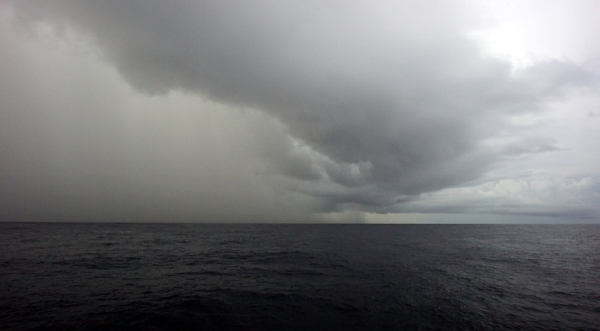

squalls
Why do some sailors fear being becalmed at sea? Before we made the Pacific jump, some admitted carrying enough fuel to carry them across an ocean, and that in quiet times they wouldn't hesitate to use the Iron Wind. We think this is unnecessary. Squalls are not that scary, not if you're ready and know what to expect.
Squalls bring sudden high winds and rain in passing. They usually blow at around 25 kn (46 km/h) to 40 kn and last around 30 minutes. They are easy to see from a distance, big puffy cumulonimbus clouds, with dark bottoms and a skirt of rain. Another tell-tale sign of their approach is a change in the surrounding air temperature. The air becomes noticeably cool.
Squalls do not move with the prevailing winds, but at an angle to them, and can affect a boat even when a good distance away. Whenever we see a suspicious formation on the horizon, we keep our eyes on it to track its progress, to see if our paths will cross. If it comes close, we alter course to aim for its periphery, as it is better than going straight through it. We also reduce sail, to lessen its effects. If the squall is too strong, we simply bear off and wait for it to pass.
Reefing the mainsail before darkness falls is especially important in areas prone to squalls. It ensures that the person on watch isn't overwhelmed, and that the person off-watch can sleep well. Squalls are visible at night too, especially if the moon is full and bright. We look for dark spots on the horizon, and try and see if we can see the sky underneath. If we can't, it meant the cloud has rain underneath it, and it is likely a squall. A dark mass moving contrary to the prevailing wind is also a good indicator of an approaching squall.
The doldrums is an area where prevailing winds converge, creating an area of perpetual calms. In such places we use squalls to move forward, effectively becoming storm chasers. Squalls are just another means of propulsion on a quiet ocean. We chase squalls for their wind and for their water. Water is not hard to come by when there are squalls around. We always make sure to have a bucket on deck to attach to the end of the boom to collect it.